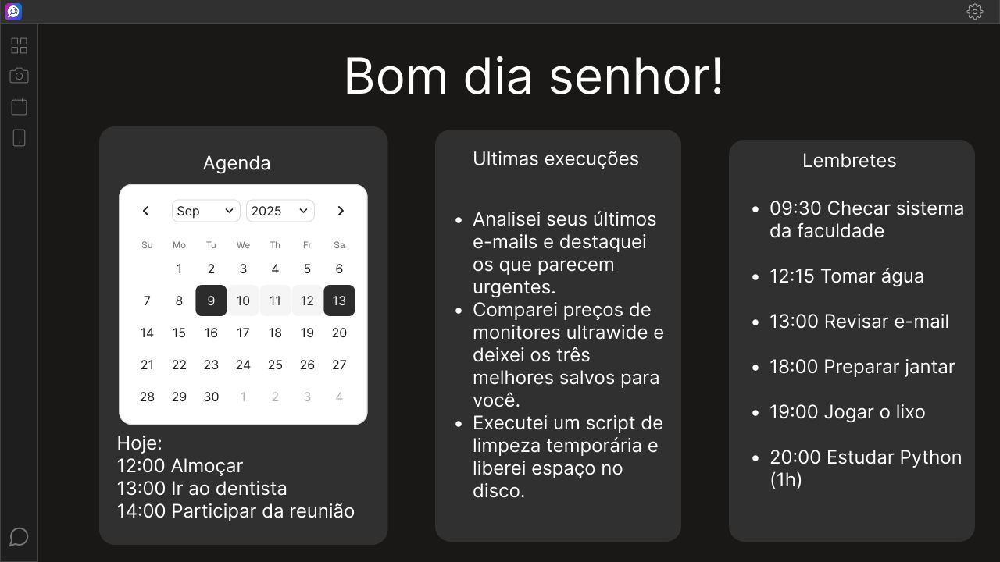

Assistente que
Escuta, Fala e Age
MomAI não é apenas um chat. É uma assistente capaz de agendar tarefas, controlar seu sistema e expandir suas capacidades infinitamente através de extensões.
Requisitos Mínimos
- 8GB de RAM
- Python 3.12 ou superior
- Provedor Local (Ollama, LM Studio) ou API Key
* Futuramente a MomAI integrará um provedor local nativo.
